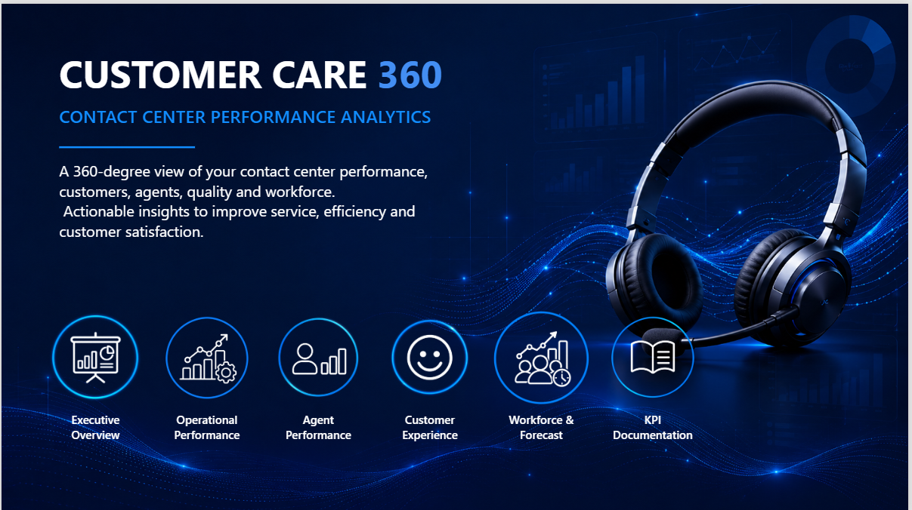
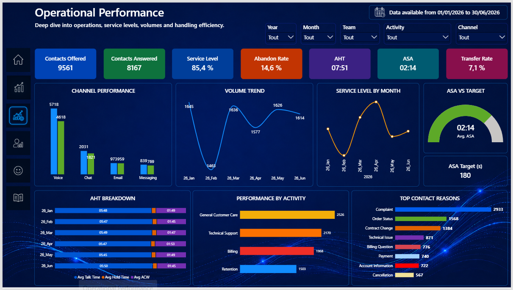
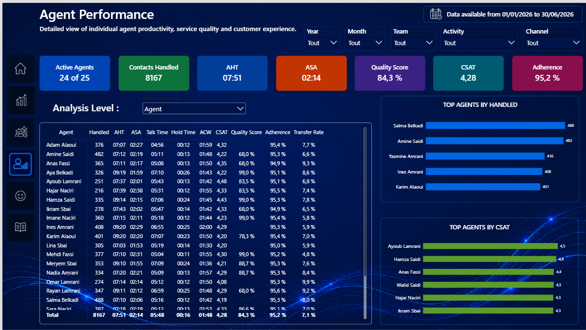
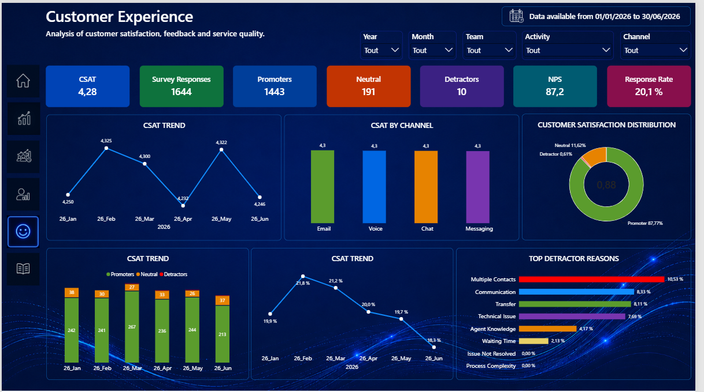
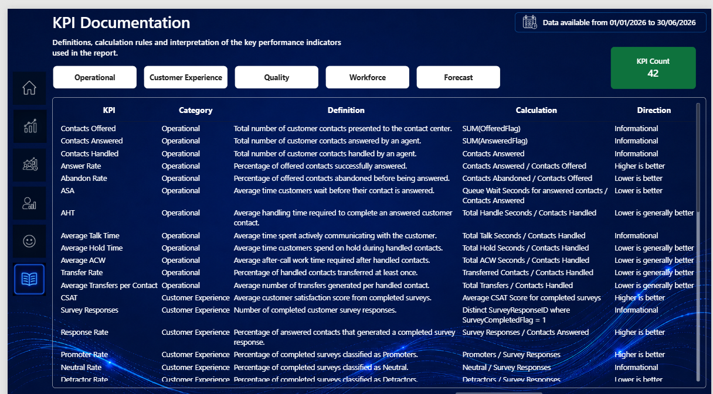

Power BI · Contact Center Analytics · Customer Experience
Customer Care 360
Contact Center Performance Analytics
A 360° Power BI solution designed to analyse contact-centre operations, agent performance, customer experience and quality through a consistent analytical model.

Project context
Business need
Bring together operational interactions, agent activity, quality assessments, customer surveys and workforce data in a consistent management view.
BI approach
Use a multi-fact Power BI model with shared dimensions, Power Query transformations, DAX measures and controlled KPI definitions.
Key metrics
OperationsAHT
OperationsACW
OperationsHold Time
ServiceFCR
CustomerCSAT
CustomerNPS
QualityQuality Score
AgentsProductivity
WorkforceAdherence
GovernanceKPI Documentation
Technical highlights
Data model & calculations
Multi-fact model with shared dimensions and explicit grains to protect KPI accuracy and prevent double counting across operational, survey, quality and workforce data.
User experience & analysis
Multi-page navigation from executive monitoring to operational, agent and customer-experience analysis, supported by documented KPI definitions.
Dashboard pages




